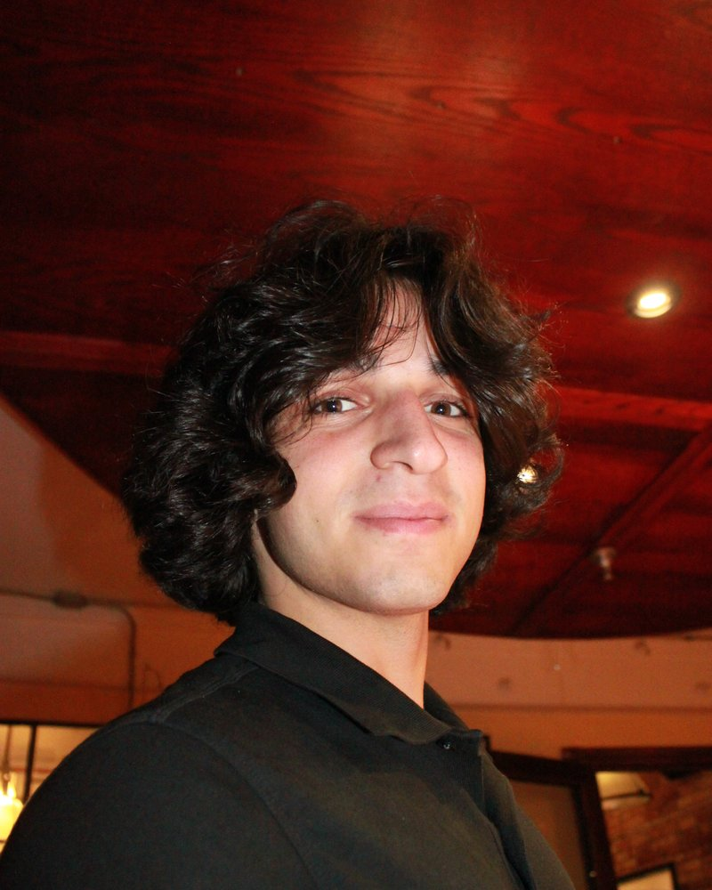

I am an Environmental Engineering student at the University of Waterloo, in the co-op program and expected to graduate in 2029.
My co-op terms have taken me from stormwater design and watermain installation at a GTA consultancy, to data tools for capital planning at Ontario's Ministry of Infrastructure, to noise and cooling-water work on a manufacturing floor.
I'm most interested in learning as much as I can and collaborating with a team of forward thinking engineers. I would like to explore environmental rehabilitation, physical modeling of water flow, and process optimization.

technical
R, Python, Power BI, Power Automate, AutoCAD, Civil 3D, InfraWorks, hydrologic modelling (Visual OTTHYMO)
field
Soil sampling and hydrometer analysis, level and total station surveying, construction inspection
interests
Water flow modeling, environmental rehabilitation, process optimization, data visualization
outside work
Bouldering, sport climbing, weightlifting, cooking